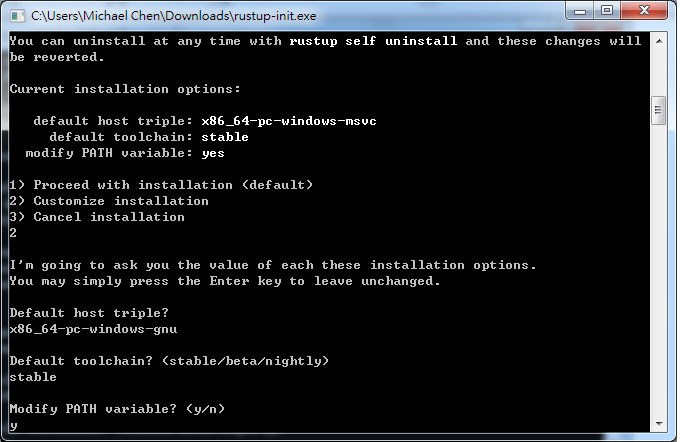
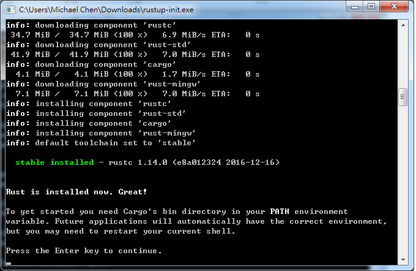

準備工作¶
本章介紹撰寫 Rust 程式前的準備工作。建議讀者在自己的電腦上實地動手建置 Rust 開發環境，以便後續練習撰寫 Rust 程式，這個過程不會花上太多時間。
試用 Rust¶
如果只是想先嘗試一下 Rust 的語法，可到 Rust Playground 網站，即可線上撰寫 Rust 程式，不需額外安裝其他的軟體。由於安全性考量，這個網站不能使用外部套件，只能用 Rust 內建的套件，對於初期的練習這樣的環境已經足夠。
安裝 Rust¶
Rust 本身是跨平台的程式語言，同時支援 Windows、Mac、Linux、BSD 等多種平台，可透過 rustup 這隻終端機程式來安裝及管理。rustup 的優點在於可以很輕鬆地在不同版本和平台的 Rust 編譯器間切換，對於更換不同 Rust 版本和交叉編譯 (cross-compiling) 相當方便。
Windows¶
根據 C/C++ 函式庫的來源不同，對應不同的 Rust 版本，一個是使用 Visual Studio 的 MSVC ABI (Application Binary Interface)，一個是使用 GCC 編譯器的 GNU ABI，要使用那一個版本的 Rust，要看使用者想使用那個版本的 ABI 所建立的 C/C++ 函式庫而定。若讀者沒特別的偏好，建議以 GNU ABI 較佳，原因在於日後需要引用第三方 C/C++ 函式庫時，使用 GNU ABI 可以搭配 MinGW/MSYS2 所提供的第三方 C/C++ 函式庫。
在 Windows 下，到 Rust 官網下載 rust-init.exe 這隻小型程式即可安裝 rustup。啟動後會出現以下畫面：
按 y 後，繼續來到以下畫面：

預設是安裝 x86_64-pc-windows-msvc 版本的 Rust，但我們要使用 GNU ABI 的版本，故選 2，修改安裝版本。
參考下圖，修改為 x86_64-pc-windows-gnu 的 stable 版本：
之後，會自動下載 Rust 相關的程式，結束後關閉視窗即可。
日後若需要 MSVC ABI 版本的 Rust，也不需重裝，因 rustup 可在不同版本的 Rust 間切換。由於 Rust 的標準函式庫是跨平台的，筆者通常習慣在 Unix-like 系統下撰寫 Rust 專案，僅在需要時將該專案移到 Windows 系統下編譯，若沒有用到第三方 C/C++ 函式庫，通常都可以編譯成功，也不需要針對特定平台撰寫條件式編譯程式碼以呼叫特定平台的函式，可說是 Rust 的一項優點。
Unix-like 系統¶
對於 Mac 和 Linux 等 Unix-like 系統，rustup 提供 shell 命令稿來安裝。在終端機輸入以下命令：
$ curl https://sh.rustup.rs -sSf | sh
rustup 會出現提示文字，可視需求自行調整，若沒有特別需求，接受預設選項即可。rustup 和 Rust 都會安裝到 $HOME/.cargo/bin 資料夾，再將此路徑加入 PATH 變數即可。
使用 rustup 管理 Rust¶
透過 rustup 可管理多個版本的 Rust，相當方便，本節介紹 rustup 的使用方式。
更新 Rust¶
Rust 有三個不同的版本，分別為 stable、beta、nightly，有一些實驗性質的特性，僅放在 nightly 版本的 Rust。預設情形下，rustup 會安裝 stable 版本的 Rust。輸入 rustup update 即可更新 Rust。
$ rustup update
info: syncing channel updates for 'stable'
info: downloading component 'rustc'
info: downloading component 'rust-std'
info: downloading component 'rust-docs'
info: downloading component 'cargo'
info: installing component 'rustc'
info: installing component 'rust-std'
info: installing component 'rust-docs'
info: installing component 'cargo'
info: checking for self-updates
info: downloading self-updates
stable-x86_64-unknown-linux-gnu updated - rustc 1.14.0 (e8a012324 2016-12-16)
如果要更新 rustup，輸入 rustup self update。
$ rustup self update
info: checking for self-updates
info: downloading self-updates
切換 toolchain¶
Rust 有許多針對不同 CPU、系統、C/C++ 函式庫的版本，透過 rustup 可快速地切換。先以 rustup toolchain list 列出所有可選的版本：
$ rust target list
# Omit some message
x86_64-apple-darwin
x86_64-apple-ios
x86_64-pc-windows-gnu
x86_64-pc-windows-msvc
x86_64-rumprun-netbsd
x86_64-unknown-freebsd
x86_64-unknown-linux-gnu (default)
x86_64-unknown-linux-musl
x86_64-unknown-netbsd
musl 是一套小型的 C 函式庫，可用來在 Linux 下建立靜態連結的機械碼。若想安裝以 musl 為基礎的 Rust，使用 rust target add：
$ rustup target add x86_64-unknown-linux-musl
日後在編譯專案時，可指定特定的 target：
$ cargo build --target=x86_64-unknown-linux-musl
使用實驗性質的特性¶
某些尚在實驗性質、不穩定的特性，會在 nightly 版本的 Rust 發布。若想使用 nightly 版本的 Rust，輸入 rustup install nightly。
$ rustup install nightly
info: syncing channel updates for 'nightly'
info: downloading toolchain manifest
info: downloading component 'rustc'
info: downloading component 'rust-std'
info: downloading component 'rust-docs'
info: downloading component 'cargo'
info: installing component 'rustc'
info: installing component 'rust-std'
info: installing component 'rust-docs'
info: installing component 'cargo'
nightly-x86_64-unknown-linux-gnu installed - rustc 1.15.0-nightly (71c06a56a 2016-12-18)
安裝完後，可輸入 rustup default 切換 Rust 版本。
# Use nightly version
$ rustup default nightly
# Use stable version
$ rustup default stable
在實務上，較不建議使用 nightly 版本的 Rust，會造成專案程式碼的不穩定。
交叉編譯¶
由於 Rust 的函式庫是跨平台的，理論上，交叉編譯也是可行的。假若想要在 Linux 上交叉編譯某個 Rust 專案到 Mac 平台，在該專案的根目錄輸入以下指令：
# Say that we are on Linux now
$ cargo build --target=x86_64-apple-darwin
註：經筆者實際測試，交叉編譯有時仍有問題需自行排除，和該平台的 C/C++ toolchain 有關。
若該 Rust 專案只用到 Rust 程式碼，應該都可以在不同系統間編譯。若有用到第三方 C/C++ 函式庫，則需自行建置交叉編譯的環境。可參考 crosstool-NG 或其他的方案來建立環境，但交叉編譯是較進階的主題，本書不詳述，請讀者自行查閱相關資料。
安裝開發工具¶
目前支援 Rust 的整合式開發環境 (IDE, Integrated Development Environment) 如下：
- Eclipse
- Visual Studio
- IntelliJ IDEA
目前支援 Rust 的編輯器 (editor) 如下：
- Emacs
- Vim
- Sublime Text
- Atom
- Visual Studio Code
對於練習用的程式碼或小型專案，使用編輯器較為輕巧方便，對於中大型專案，IDE 則支援較多的功能。筆者在圖形介面下使用 Atom，在終端機下使用 Emacs，而讀者可自行從中選用喜歡的開發工具，這裡就不列出每個工具的安裝和使用方法。
註：Emacs 及 Vim 上手較為困難，程式設計初學者宜先嘗試其他開發工具。
Hello World¶
接下來，我們用 Hello World 這佪經典的範例，練習如何撰寫 Rust 程式。
首先，用編輯器建立一個檔案 hello.rs，加入以下的內容：
fn main() {
println!("Hello, World");
}
接著，用 Rust 編譯器 rustc 編譯這個程式，然後執行：
$ rustc hello.rs
$ ./hello
Hello, World
如果成功顯示出 Hello, World 字串，代表我們已經成功撰寫第一個 Rust 程式。
Cargo¶
雖然我們成功編譯出第一個 Rust 程式，隨著專案的規模上升，外部相依性增加，編譯指令會更複雜。為了簡化編譯軟體的步驟，Rust 提供 Cargo 這個專案管理程式。透過 Cargo，可以簡化 Rust 專案編譯、測試和發佈等步驟。
我們現在用 Cargo 重新撰寫 Hello World 程式。Cargo 專案分為兩種，一種是主程式，一種是函式庫，前者是可直接執行的執行檔，後者則是供其他的外部程式呼叫。我們的 Hello World 程式屬於主程式。輸入以下指令：
$ cargo new --bin hello
$ cd hello
編輯 src/main.rs 檔案，改為前述的 Hello World 程式碼。接著，執行該程式：
$ cargo run
Compiling hello v0.1.0 (file:///home/cwchen/src/rust_ex/hello)
Finished debug [unoptimized + debuginfo] target(s) in 0.13 secs
Running `target/debug/hello`
Hello, world!
若顯示出 Hello World 字串，代表專案執行成功。
若要編譯程式，用 cargo build 指令即可。預設情形下，生成的是帶有除錯誤息且未優化的機械碼，若要生成對外發布的程式碼，則用 cargo build --release 指令即可。強烈建議日後在撰寫 Rust 程式碼時，將程式碼以 Cargo 管理。本書假定讀者使用 Cargo 管理程式碼，不會特別寫出編譯程式碼的指令。